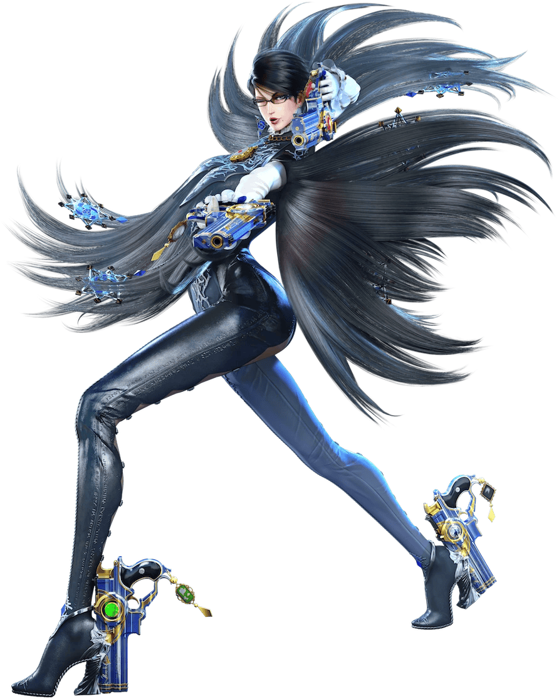
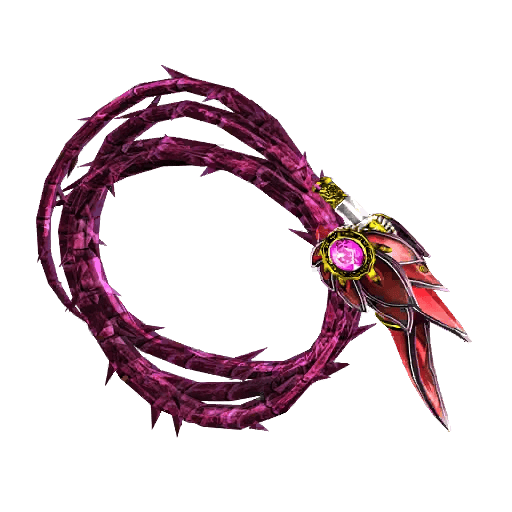
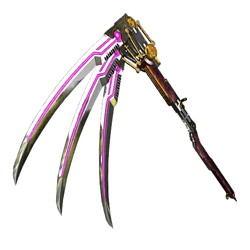
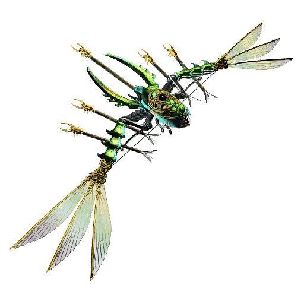
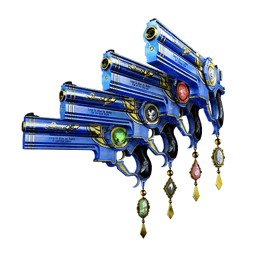

Want to be a witch? Sign up now!
Sign up by clicking that button right over there!
Bayonetta's hair is short and her glasses have a ribbon design near the lenses. She retains her skin-tight bodysuit, though the design has been radically altered. The suit is more gray in color with jagged patterns resembling thorns and a frilly collar. She has sharp shoulder pads and a cloak of hair over her chest, as well as triangular earrings. The palms of her gloves are blue with frills at the wrists. The back of her suit features a diamond shaped opening, and several diamond cutouts on her legs.


ALRUNA A whip containing the soul of a demon who shares the same name as a flower that blooms in Inferno. Laced with thorns, it slithers as if it were alive. Those who can hear the crack of the whip can feel Alraune whisper its curse in their ears.

CHERNOBOG A scythe containing souls captured by the god of death Chernobog, who had been expelled to the farthest depths of Inferno. Rodin infused the scythe with some particularly exquisite souls, restoring the weapon to its former glory. Those cut by its three giant, creeping blades have their wounds infected by darkness and their souls rot to the bottom of Inferno.

KAFKA A bow and arrow made with a man who once cursed another and who in turn metamorphosed into a hideous insect. Still living inside a part of the bow's frame, he fires cursed arrows of savage, venomous bugs.

LOVE IS BLUE A set of guns masterfully crafted by the famed demon-smith Rodin, waiting for their time to finally be put to use. Individually, their names are Prelude, Minuet, Toccata, and Nocturne.
"You didn't think I'd miss a good fight, did you?"
Sign up by clicking that button right over there!